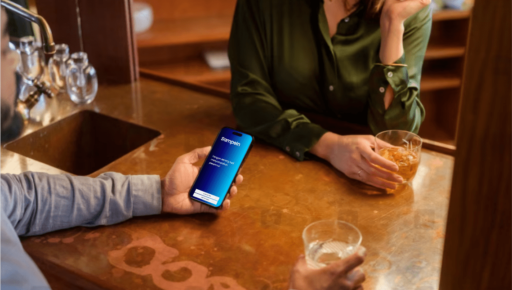

Apa itu SampeIn?

SampeIn adalah aplikasi web yang membantu penyandang tunarungu dan tunanetra berkomunikasi. Penyandang tunarungu dapat menggunakan fitur mengubah suara menjadi teks untuk memahami lawan bicara. Mereka juga dapat berkomunikasi dengan penyandang tunanetra menggunakan fitur mengubah teks menjadi suara.